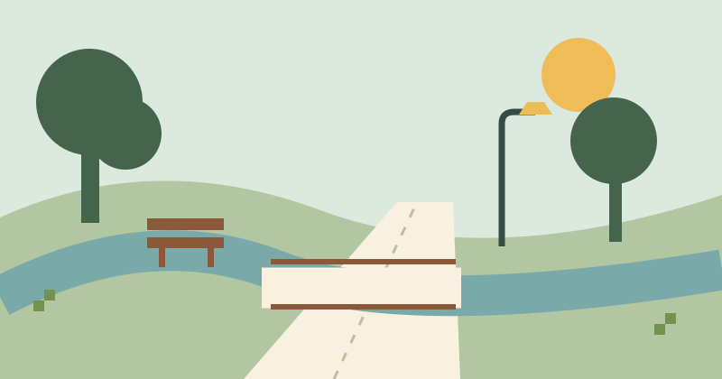

What is the path like?
Surface · obstacles · ramps · last checked
See sample →THE IDEA / HOUSTON HACKATHON 2026
Anole is a concept for community-created observations about places and infrastructure. The same photo, pin and context can help make everyday details easier to find.

An observation is a moment in time. Anole’s proposed interface keeps the condition, date and verification status together, so uncertainty stays visible.
The friendly brown anole is our guide. Its upward-curled tail points out something worth noticing. It never signals an official warning or a verified city report.
REUSABLE TEMPLATES / CONCEPT SCREEN
Neighbours could reuse a template suited to their question. Template creation and editing are future possibilities.
Surface · obstacles · ramps · last checked
See sample →Light condition · pole location · observation time · official reporting link
See sample →Resource type · potential supplies · date · verification status
See sample →Condition · facilities · cleanup needs · possible activities
See sample →